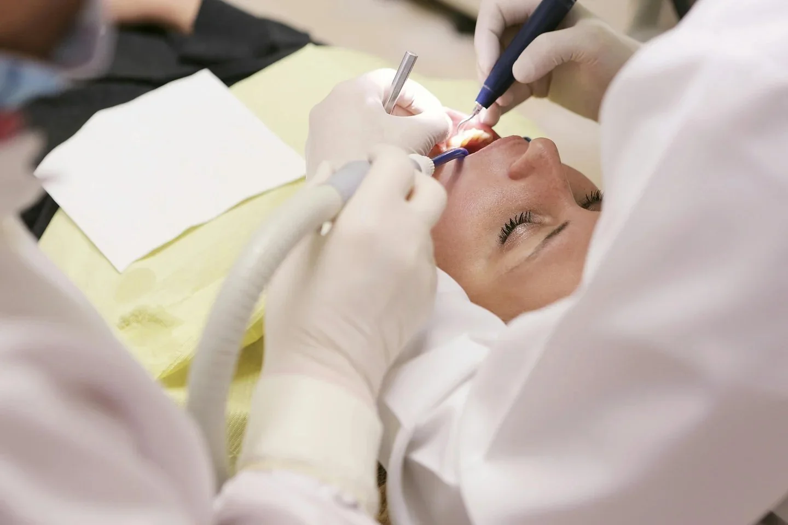
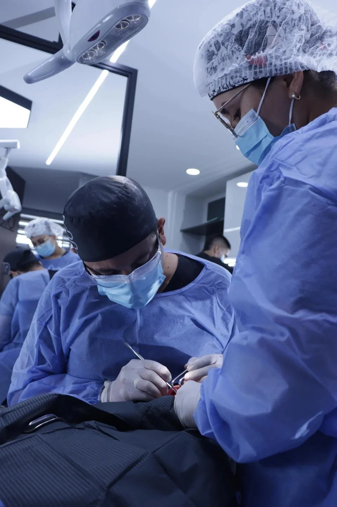

01
Periodontal care
Start with an assessment of gums and the structures supporting your teeth.

Periodontics, dental implants and oral rehabilitation in Bucaramanga. A coordinated approach that starts by understanding your oral health.
 Dr. Luis Felipe Quiceno
Dr. Luis Felipe QuicenoA treatment plan connects the condition of the gums, the supporting structures and the function of the teeth. Your specialist defines the appropriate sequence.
Start with an assessment of gums and the structures supporting your teeth.

Understand suitability, planning and the stages that your individual case may require.

Connect function, comfort and aesthetics through a personalised treatment plan.

Dr. Luis Felipe Quiceno’s practice presents periodontics, implants and rehabilitation. The clinical team explains the stages, visits and maintenance appropriate for each patient.
About the practice ↗A conversation from abroad. A clinical plan confirmed in person. A coordinated next step.
Contact the practice about your goals, language and country of residence.
The professional explains suitable options, required visits and follow-up.
Coordinate dates and care arrangements with the team before booking travel.
Clarify the follow-up plan and who to contact after returning home.
Ask the practice about remote assessment, language and the next steps for your circumstances. The demonstration calendar is not connected to the clinic.
The clinician determines the visits and follow-up after assessing your case. Confirm this before committing to travel.
The clinical team will explain what information or records it needs through its official channels. Do not send clinical records through this concept website.
Demonstration only. No real appointment is reserved.